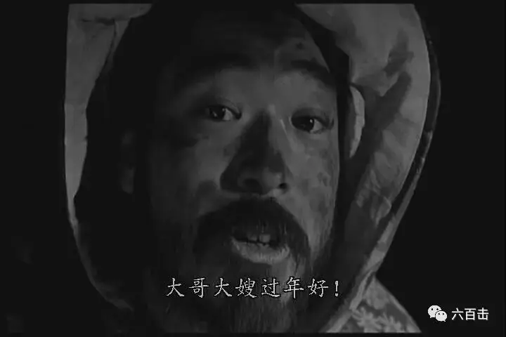
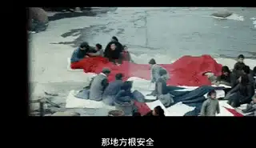
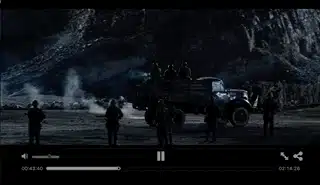
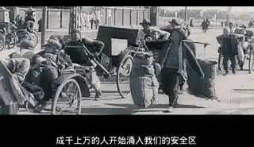
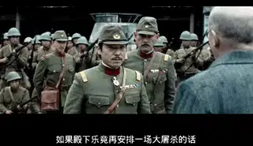

仁慈的上帝，请您保守所有的人免遭灾难，也请您保守所有像我们这样已经身陷灾难中的人！我丝毫不后悔留了下来， 因为我的存在拯救了许多人的性命。但尽管如此，我仍然感到极端的难受！
——约翰.拉贝
今天是南京大屠杀80周年国祭日，我们每一个中国人都应当纪念一个德国人：约翰.拉贝。
他在南京大屠杀中拯救了25万中国难民。
其《拉贝日记》被公认为是研究南京大屠杀事件数量最多、保存得最为完整的史料，也成为指认日本罪行最有力的证据之一。
约翰·拉贝（John Rabe；1882年11月23日－1950年1月5日）
美国华裔女作家张纯如将拉贝称为“东方的辛德勒”。
但按照邵子平先生的评价 “应该说辛德勒是一个小小的拉贝”。
一般认为辛德勒雇佣1200名犹太人做工时纳粹德国已显败象，除商业利益外辛德勒也有对自己前程的考虑
而拉贝等人保护25万难民则完全出于单纯的人道主义动机，并与西门子公司及德国政府的意愿相反。
约翰.拉贝被召回德国后，立即四处公开演讲、作展览、放映马吉拍摄的纪录片，揭露日军暴行，并写信给希特勒，提交关于南京大屠杀的报告，希望德国政府出面对日本施加压力。
他甚至因此一度被盖世太保逮捕并遭到迫害，几年后在凄凉和贫穷中在西柏林逝世。
今天我们就一起通过其日记改编的电影《拉贝日记》，来纪念这位在中国生活了27年零142天的“东方辛德勒”
电影阵容很强大，扮演约翰.拉贝的乌尔里奇·图克尔，曾因迈克尔.哈内克的《白丝带》以及奥斯卡获奖电影《窃听风暴》而蜚声国际。
而扮演日本上海派遣军司令官的香川照之更是日本实力派演员，曾获东京国际电影节最佳男主角奖，其在姜文的《鬼子来了》中的逗逼又凶残的日本人形象更为国人熟知。

《鬼子来了》剧照
同时还有中国女演员张静初加盟本片，扮演金陵神学院的一名女学生，擅长摄影，在南京大屠杀中，拍摄记录了这段可怕的历史。
01 党性不纯正的纳粹干部
约翰.拉贝1908年来到中国，1911年至1938年间受雇于西门子康采恩的中国子公司——西门子中国公司，开始在中国沈阳、北京、天津、上海、南京等地经商，在中国时间前后长达30余年。
1931年至1938年前后，拉贝任西门子公司驻华总代表，曾代理德国纳粹党南京分部副部长。
电影开始于南京大屠杀前几日，约翰.拉贝接到德国西门子总部的通知，要将其调往总部，并安排了另外一个同事来接替他在南京的工作。
当那位纯正的纳粹党员小哥见到约翰.贝拉的时候，他发现这个人简直是纳粹中的败类。
他和中国人打成一片，十分关心工厂里的中国人，要知道在纳粹眼中，其他民族都是渣渣。
约翰.拉贝和其他国家的人往来密切，甚至包括纳粹德国的死对头英国人。
更让那位小哥“大跌眼界”的是，约翰.拉贝甚至把纳粹旗随随便便丢在一旁，办公室墙上挂的不是他们所崇拜的元首希特勒，而是英国国王。
而约翰.拉贝为了应付小哥的到来，临时培训了工厂内中国人如何用手势喊希特勒万岁。
悲剧的是，其“目无党性”的调皮还是暴露了，其中一个中国人的手都伸错了。
简单的开场，我们就能够看出约翰.拉贝对于中国和中国人的熟悉和热爱。
也明显的知道，他并不吃纳粹那一套。
02 当选为“南京安全区”主席
本来打算第二天离开南京，返回德国，可是就在当晚的晚宴上，日本突然发动了对南京的袭击，住在工厂外面的中国人向拉贝求救，但是却被刚刚上任的小哥拒之门外。
拉贝愤怒的喊道：是哪个混蛋让把大门关上的。
拉贝让人把门打开，中国人逃到院子里，但是日本空军仍然继续攻击落难的中国人，拉贝很机智的让大家躲在德国的国旗之下。
因为是盟国的缘故，日军空军没有继续开火，掉头离开。
日军在南京发动袭击之后，拉贝和其他友人见证了中国人的苦难。

这让他们良心很受煎熬，尤其是对于皮尔逊医生，他在医院亲眼目睹了无数南京平民的眼泪和死亡。
每个人都在想：究竟是明哲保身，还是要帮助中国人？
金陵女子文理学院教务主任魏特琳则很勇敢的表达了自己的立场：不能撇下中国人。
最终，约翰.拉贝和十几位外国传教士、金陵大学与金陵女子文理学院教授、医生、商人决定要成立“南京安全区“。
希望能够借助安全区来护庇南京难民，而拉贝则被当选为主席。
03 每个人的双眼都盯着我看
没多久，南京就被攻陷了
瞬间，南京成为了地狱，30多万同胞被日本人残忍屠杀

日本士兵甚至将中国人的性命当游戏，展开猎头比赛。
竟然还合影留念。
而这个人间地狱的唯一希望就是拉贝他们建立的安全区，二十多万中国难民涌入安全区。

国际委员会也不断的往安全区运输米面，拉贝也将自己的钱财全部捐给难民，帮助他们一起度过难关。
但是即使在安全区内，谁也不敢保证日军不会打进来，难民只能将希望都放在了拉贝的身上。
而拉贝所要面对的，都是让他抓狂无奈的选择题。
几百中国士兵要被日军处决，拉贝以工厂需要壮丁为由向日军要人，但是日军只允许挑走20人。
拉贝要从这几百人当中挑出20人，他要如何选择，他要如何面对那些没有被选上的人绝望的双眼。
拉贝惊慌失措，他只能凭着直觉痛下心来挑出20个人，这已是他做出的最大努力。
后面有传教士将一些中国军人藏在安全区中，这又是出给拉贝的一道难题。
日本人早已对安全区虎视眈眈，私藏军人，这不正是给自己挖坑么！
为了救几百个军人，二十多万人的性命有可能会受牵连。
但是这几百个军人的生命也是生命啊，拉贝该如何选择。
此时，国际上派来的新闻记者团和大使所乘的船马上就要抵达南京，日本人决心要在他们到来之前，将安全区除掉。
早有耳闻的拉贝只能兵行险招。
老百姓们挡在门外，用自己的身躯挑战着日本人良知的底线，如果要进入安全区抓人，那就从我们这些老百姓的身体上跨过去。
双方僵持了几个小时，日军还是要痛下杀手，命令士兵准备射击，并将坦克开来，眼看着马上要开火了，拉贝勇敢的走出来，告诉日军指挥官：
如果殿下乐意再安排一场大屠杀的话，请您把我们一起杀掉。

再一次双方陷入僵持中，千钧一发之时，记者团和大使的船到了，日军担心暴行外露，下令撤军，安全区25万难民得以存活，这简直是一个神迹。
04 女拉贝尔 明妮·魏特琳
电影中那位坚持正义、勇往直前的魏特琳也必须要介绍一下，她是《金陵十三钗》中神父的原型。
魏特琳出生于美国伊利诺伊州塞科尔，1912年毕业于伊利诺伊大学，同年受美国基督会差会派遣到中国，担任安徽省庐州府（今合肥）基督会三育女中校长。1916年金陵女子大学在南京成立时，她担任教育系主任。
日本攻占南京后，魏特琳则留在南京照管金陵女子文理学院校园，自愿与该学院教职员组成留守委员会，任代理院长。
在南京大屠杀期间，她积极营救中国难民，利用金陵女子文理学院保护了上万名中国妇孺难民。她从1937年8月12日到1940年4月的日记中，详细记载了在日本占领下南京的情形，并邮寄给该学院在美国纽约校董会的校友。
成为南京大屠杀的重要见证人，被誉为是女拉贝尔。
面对日本灭绝人性的疯狂，她指出：
“我们这些人认为，战争是国家犯罪，是违背上帝创世精神的一种罪恶。我们可以把自己的力量奉献给那些无辜的受害者，献给那些家庭被烧、被抢，或者是在战争时期被飞机大炮炸伤的人，帮助他们康复。”
而金陵学院的女学生经常是日军施暴的“猎物“，面对日军罪行，魏特琳气得双手紧握，对天发誓。
“如果上帝赋予我权力，我真想亲手杀了那些强奸我姐妹的日本兵！”
她的日记是对日本人一直想抵赖的大屠杀罪行最直接和最有力的控诉：
我7时30分到校门口，给索恩先生捎了个信，红十字会的粥厂必须有煤和米。又有许多疲惫不堪、神情惊恐的妇女来了，说她们过了一个恐怖之夜。日本兵不断地光顾她们的家(从12岁的少女到60岁的老妪都被强奸。丈夫们被迫离开卧室，怀孕的妻子被刺刀剖腹。要是有良知的日本人知道这些恐怖的事实就好了)。
但愿这里有人有时间写下每一件可悲的事情，特别是那些抹黑脸庞、剪掉头发的年轻女子的遭遇。看门人说，她们从早上6时30分就开始进来了。
整个上午我都奔波于出现日本兵的大门口、小门、南山和宿舍。今天早饭和午饭时也跑了一两次。数天来，没有一顿饭不被跑来的工人打断：“华小姐，3个日本兵进了科学楼……只要我知道，我看见，我就决不会让这帮野兽糟蹋了我的姐妹们！”
05 我们应当尊重历史
因为某些原因，我们对于南京大屠杀的反省和正视是不够的，除了约翰.拉贝和其他传教士的贡献之外。
我们更要正视国名党在其中的浴血奋战和牺牲，他们是值得称颂和纪念的，这个沉重的历史需要我们尊重，而还原真相则是最大的尊重，希望我们能够主动迈近一步，更多的了解这段历史。
《拉贝日记》完整版在线观看
纪录片：《约翰拉贝-南京大屠杀中的德国人》
如果你想要观看超清版《拉贝日记》
可在后台回复拉贝日记获取资源
相关推荐：
《至暗时刻》| 永不！永不！永远都不要放弃！
《潜行者》 | 这是全人类绝无仅有的电影了
《乡愁》 | 没有一个人能够将信仰拍的如此诗意和凝重
这里没有挑逗你眼目情欲的小鲜肉
也没有挑动你肉体情欲的段子
更没有膨胀你今生骄傲的鸡血
我们只在乎那些最质朴真诚的作品
在那里我们才能恢复真正的想象力
我们也坚信这才是我们真正需要的

ID:Six_hundred_hits
长按二维码，一键关注
【六百击】
-END-
电影评论
尽情分享朋友圈

苹果打赏通道